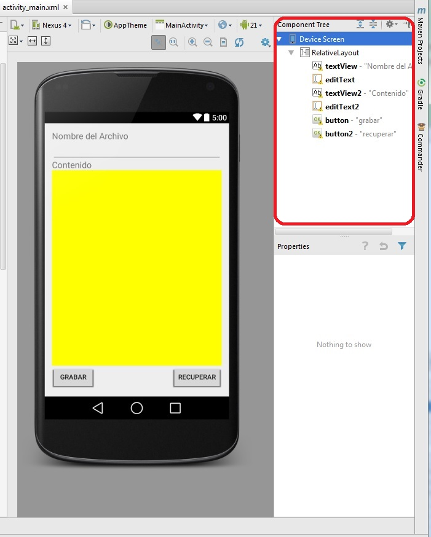
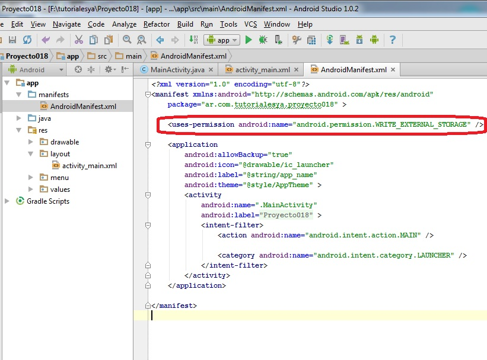
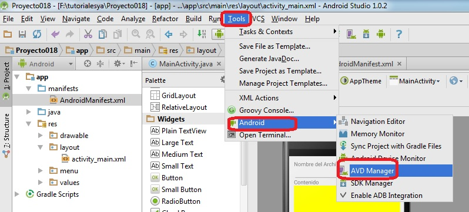
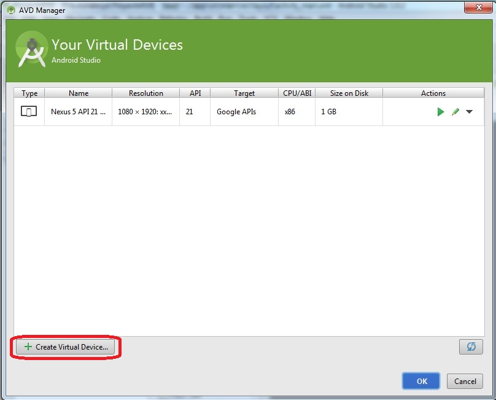
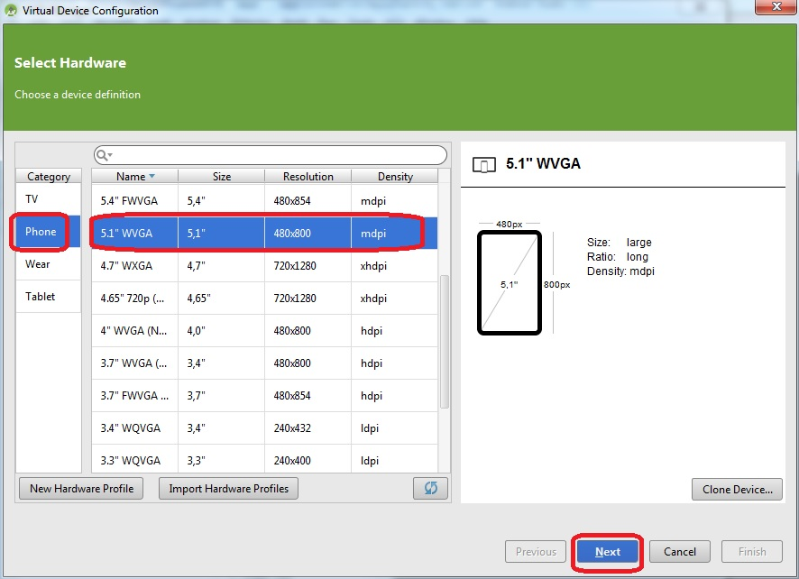
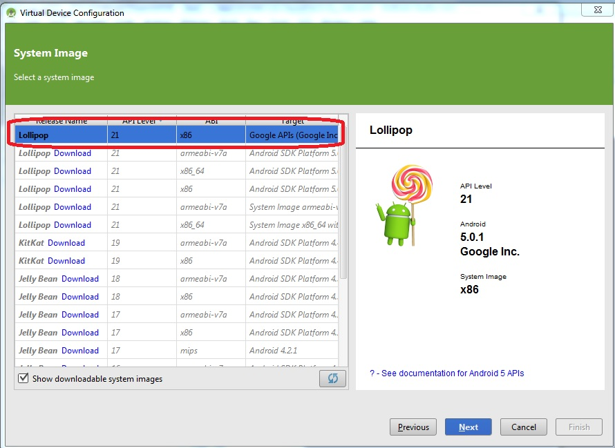
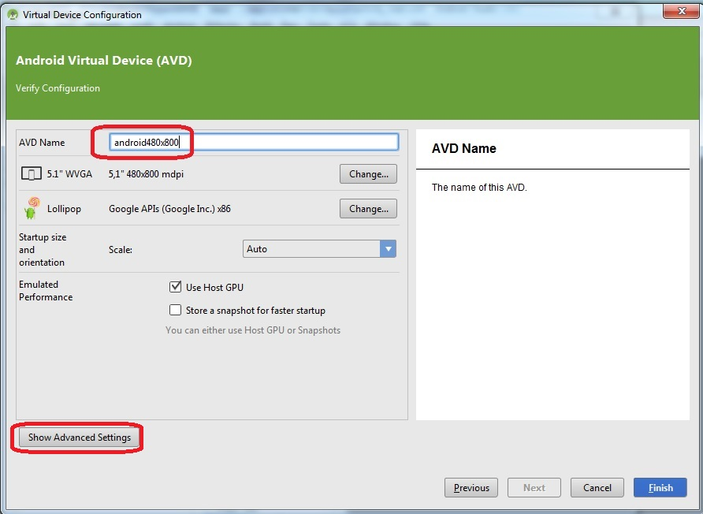
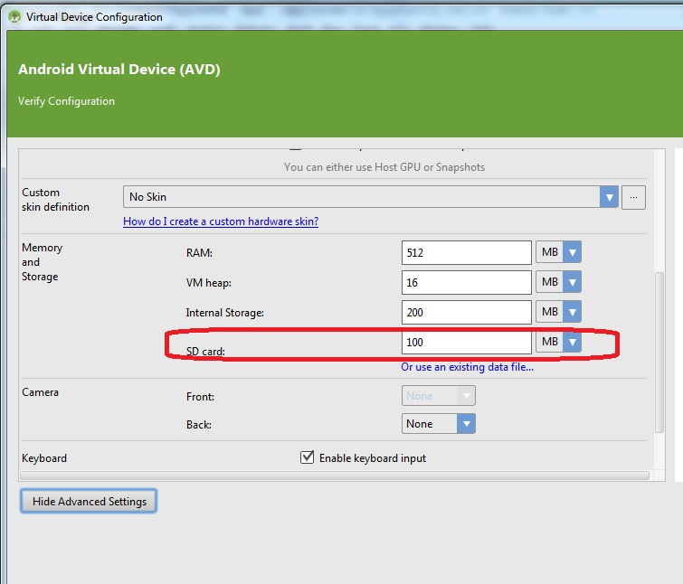
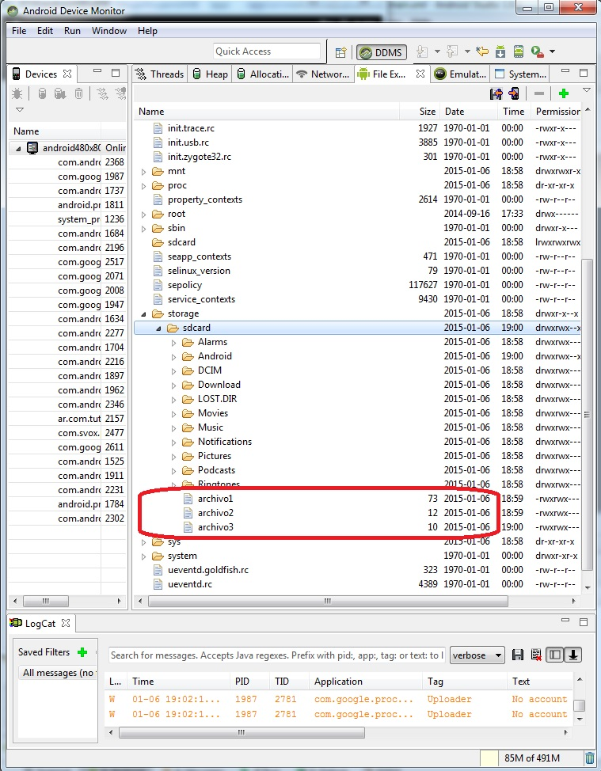

15 - Almacenamiento de datos en un archivo de texto localizado en una tarjeta SD |
En el concepto anterior vimos como crear y leer un archivo de texto en la memoria interna del equipo Android. En algunas situaciones podría ser útil almacenar los datos en una tarjeta SD (tener en cuenta que no todos los dispositivos Android cuentan con esta característica), esto debido a su mayor capacidad o la facilidad de compartir los archivos con otras personas entregando la tarjeta SD.
Confeccionar un programa que permita ingresar el nombre de un archivo y el contenido. Permitir grabar los datos ingresados al presionar un botón. Disponer un segundo botón que permita recuperar los datos del archivo de texto.
Hacer que los archivos se graben en una tarjeta SD.
La interfaz visual a implementar es la siguiente:
Podemos ver en la ventana "Component Tree" que la interfaz contiene dos TextView, dos EditText y dos Button.
No olvidar inicializar las propiedades onClick de cada botón con los nombres de métodos "grabar" y "recuperar".
El primer paso es modificar el archivo AndroidManifest.xml para permitir el acceso a la tarjeta SD desde nuestra aplicación esto lo hacemos desde el editor de texto del Android Studio
En la carpeta app/manifests podemos abrir el archivo "AndroidManifest.xml" y agregar la línea de permiso de acceso a la memoria externa del dispositivo:
Tenemos que agregar el permiso siguiente:
<uses-permission android:name="android.permission.WRITE_EXTERNAL_STORAGE" />
Tener cuidado que debe estar fuera del elemento application pero dentro del elemento manifest:
<?xml version="1.0" encoding="utf-8"?>
<manifest xmlns:android="http://schemas.android.com/apk/res/android"
package="ar.com.tutorialesya.proyecto018" >
<uses-permission android:name="android.permission.WRITE_EXTERNAL_STORAGE" />
<application
android:allowBackup="true"
android:icon="@drawable/ic_launcher"
android:label="@string/app_name"
android:theme="@style/AppTheme" >
<activity
android:name=".MainActivity"
android:label="@string/app_name" >
<intent-filter>
<action android:name="android.intent.action.MAIN" />
<category android:name="android.intent.category.LAUNCHER" />
</intent-filter>
</activity>
</application>
</manifest>
El código fuente es:
package ar.com.tutorialesya.proyecto018;
import android.os.Environment;
import android.support.v7.app.ActionBarActivity;
import android.os.Bundle;
import android.view.Menu;
import android.view.MenuItem;
import android.view.View;
import android.widget.EditText;
import android.widget.Toast;
import java.io.BufferedReader;
import java.io.File;
import java.io.FileInputStream;
import java.io.FileOutputStream;
import java.io.IOException;
import java.io.InputStreamReader;
import java.io.OutputStreamWriter;
public class MainActivity extends ActionBarActivity {
private EditText et1,et2;
@Override
protected void onCreate(Bundle savedInstanceState) {
super.onCreate(savedInstanceState);
setContentView(R.layout.activity_main);
et1=(EditText)findViewById(R.id.editText);
et2=(EditText)findViewById(R.id.editText2);
}
@Override
public boolean onCreateOptionsMenu(Menu menu) {
// Inflate the menu; this adds items to the action bar if it is present.
getMenuInflater().inflate(R.menu.menu_main, menu);
return true;
}
@Override
public boolean onOptionsItemSelected(MenuItem item) {
// Handle action bar item clicks here. The action bar will
// automatically handle clicks on the Home/Up button, so long
// as you specify a parent activity in AndroidManifest.xml.
int id = item.getItemId();
//noinspection SimplifiableIfStatement
if (id == R.id.action_settings) {
return true;
}
return super.onOptionsItemSelected(item);
}
public void grabar(View v) {
String nomarchivo = et1.getText().toString();
String contenido = et2.getText().toString();
try {
File tarjeta = Environment.getExternalStorageDirectory();
Toast.makeText(this,tarjeta.getAbsolutePath(),Toast.LENGTH_LONG).show();
File file = new File(tarjeta.getAbsolutePath(), nomarchivo);
OutputStreamWriter osw = new OutputStreamWriter(
new FileOutputStream(file));
osw.write(contenido);
osw.flush();
osw.close();
Toast.makeText(this, "Los datos fueron grabados correctamente",
Toast.LENGTH_SHORT).show();
et1.setText("");
et2.setText("");
} catch (IOException ioe) {
Toast.makeText(this, "No se pudo grabar",
Toast.LENGTH_SHORT).show();
}
}
public void recuperar(View v) {
String nomarchivo = et1.getText().toString();
File tarjeta = Environment.getExternalStorageDirectory();
File file = new File(tarjeta.getAbsolutePath(), nomarchivo);
try {
FileInputStream fIn = new FileInputStream(file);
InputStreamReader archivo = new InputStreamReader(fIn);
BufferedReader br = new BufferedReader(archivo);
String linea = br.readLine();
String todo = "";
while (linea != null) {
todo = todo + linea + " ";
linea = br.readLine();
}
br.close();
archivo.close();
et2.setText(todo);
} catch (IOException e) {
Toast.makeText(this, "No se pudo leer",
Toast.LENGTH_SHORT).show();
}
}
}
El método para grabar los datos en un archivo de texto localizado en una tarjeta SD comienza obteniendo el directorio raiz de la tarjeta a través del método getExternalStorageDirectory(), el mismo retorna un objeto de la clase File.
public void grabar(View v) {
String nomarchivo = et1.getText().toString();
String contenido=et2.getText().toString();
try
{
File tarjeta = Environment.getExternalStorageDirectory();
Creamos un nuevo objeto de la clase File indicando el camino de la unidad SD y el nombre del archivo a crear:
File file = new File(tarjeta.getAbsolutePath(), nomarchivo);
Por último similar al acceso de un archivo interno creamos un objeto de la clase OutputStreamWriter:
OutputStreamWriter osw =new OutputStreamWriter(new FileOutputStream(file));
Grabamos el contenido del EditText:
osw.write(contenido);
Cerramos el archivo:
osw.flush();
osw.close();
Toast.makeText(this,"Los datos fueron grabados correctamente",Toast.LENGTH_SHORT).show();
et1.setText("");
et2.setText("");
}
catch (IOException ioe)
{
Toast.makeText(this, "No se pudo grabar",
Toast.LENGTH_SHORT).show();
}
}
Para la lectura del archivo nuevamente obtenemos la referencia de la tarjeta SD para obtener el path de la unidad de almacenamiento, el resto del algoritmo es similar al visto con un archivo interno:
public void recuperar(View v) {
String nomarchivo = et1.getText().toString();
File tarjeta = Environment.getExternalStorageDirectory();
File file = new File(tarjeta.getAbsolutePath(), nomarchivo);
try {
FileInputStream fIn = new FileInputStream(file);
InputStreamReader archivo=new InputStreamReader(fIn);
BufferedReader br=new BufferedReader(archivo);
String linea=br.readLine();
String todo="";
while (linea!=null)
{
todo=todo+linea+"\n";
linea=br.readLine();
}
br.close();
archivo.close();
et2.setText(todo);
} catch (IOException e)
{
Toast.makeText(this, "No se pudo leer",
Toast.LENGTH_SHORT).show();
}
}
Este proyecto lo puede descargar en un zip desde este enlace: proyecto018.zip
Si lo probamos con el emulador del Nexus 5 en el Android Studio cuando tratemos de grabar nos mostrará la notificación "No se pudo grabar", esto debido a que dicho celular no permite extender la memoria mediante tarjetas sd.
La solución para probar es crear otro dispositivo virtual. Los pasos para crear otro dispositivo virtual en Android Studio son los siguientes:
Desde el menú de opciones del Android Studio accedemos a Tools->Android->AVD Manager.
Aparece un diálogo con todas las máquinas virtuales creadas hasta el momento (en las primeras versiones de Android Studio crea una máquina virtual para el Nexus 5)
En este nuevo diálogo debemos seleccionar que crearemos un dispositivo virtual de tipo "Phone" y por ejemplo elegiremos uno genérico de 5.1 pulgadas:
El siguiente diálogo seleccionamos la imagen de máquina virtual que disponemos:
En el nuevo diálogo asignamos un nombre al AVD, por ejemplo: Android480x800:

Presionamos el botón "Show Advanced Settings"
Controlamos que tenga configurado la propiedad de SD card con un valor de 100 o más:

Finalmente ya tenemos configurado nuestra nueva máquina virtual que permite almacenar datos en una tarjeta sd.
Cuando ejecutemos nuevamente un proyecto tenemos que seleccionar esta nueva máquina virtual para que arranque:
Si luego de ejecutar la aplicación y almacenar un par de archivos de texto queremos ver donde se almacenan en nuestro dispositivo virtual podemos inicializar el "Android Device Monitor" desde el menú del Android Studio Tools->Android->Android Device Monitor:
Como podemos ver se almacenan en una carpeta que no tiene nada que ver con la carpeta donde se almacenan los archivos de texto internos.